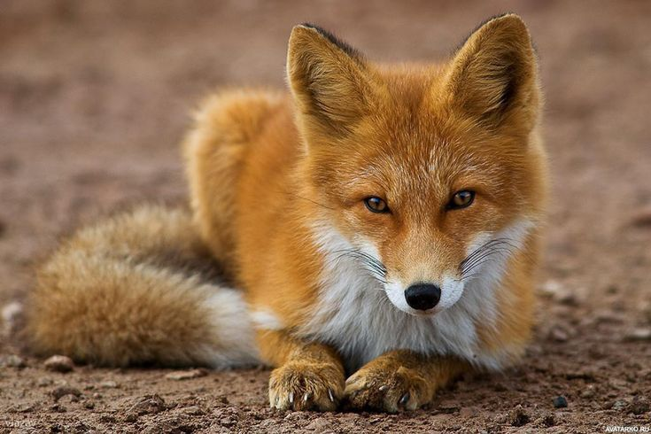

Это хищное млекопитающее семейства псовых, наиболее распространённый и самый крупный вид рода лисиц. Длина тела обыкновенной лисицы составляет 60–90 см, хвоста — 40–60 см, масса — 6–10 кг. Наиболее распространённый окрас — красный или огнёвка, характеризующийся ярко-рыжей спиной, белым (иногда чёрным) брюхом и тёмными лапами.

Ареалом возникновения современного вида Vulpes vulpes является Евразия. Именно здесь, на территории современного ареала известны ископаемые находки данного вида, начиная с конца раннего плейстоцена. В Северную Америку вид проник, вероятно, не ранее последнего межледниковья.